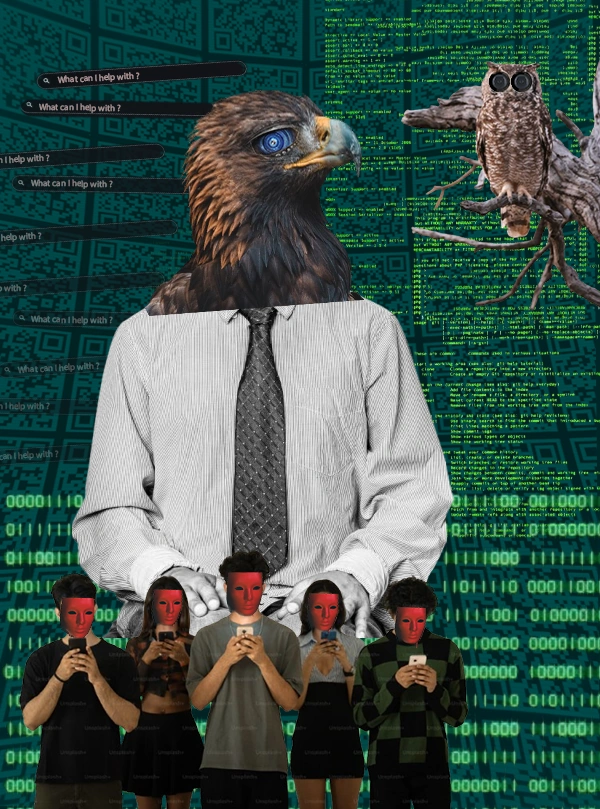
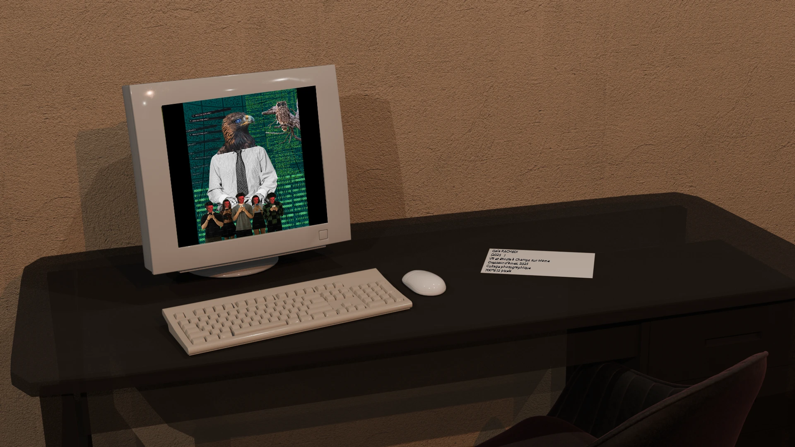

Un hombre con busto de águila y de búho, rodeado de siluetas con el rostro borrado por una pantalla, haciendo scroll sin parar.
Una crítica a la dependencia de las pantallas, a partir de «Domador de animales» de Francis Picabia.

Un hombre con busto de águila y de búho, rodeado de siluetas con el rostro borrado por una pantalla, haciendo scroll sin parar.

Presentada en 2.º año en una sala de exposición virtual construida en grupo: la obra en una computadora antigua, con su ficha explicativa justo al lado.
Yo creé la obra y su puesta en escena. La sala de exposición 3D la hizo una compañera.